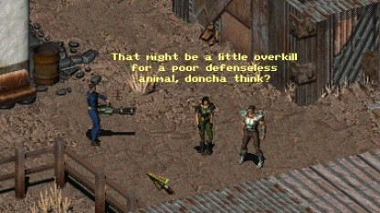

Fallout 2 modding guide
Written by Femic et al.
This guide is still work in progress!

Shot a child in the face after he pickpocketed me. Turned the whole town hostile. Ran away to New Reno. Became a Pornstar.
Fallout 2 in a nutshell.
11/10
Introduction
Welcome to my Fallout 2 modding guide.
You might ask why I created this guide and still work on it because there already are tutorials out there. I just could go and play Fallout instead of wasting my time.
Your question is absolutely justified.
This guide exists because I realized that if I want the kind of complete Fallout 2 modding guide that I envisioned, it pretty much meant writing it myself. There are already some tutorials and knowledge all over the internet regarding Fallout 2 modding but these tutorials are almost ancient and the knowledge is fragmented. I'm not going to ignore the older tutorials or knowledge instead I'll incorporate them into this guide. My goal is to create a coherent modding guide that covers every corner of Fallout 2 modding.
The first part of this guide is meant to be read from top to bottom. You'll learn what and how to touch and modify every file necessary to create a simple mod.
The second part covers mostly art. Since art is not necessary to create a mod, it is optional.
The third part serves as glossary and reference book. There you'll find deeper knowledge and stuff that didn't fit inside the other parts.
I presume that basic PC affinity is present. Otherwise, just ask.
Preparations
Installation - Fallout 2
I think I don't need to explain how to install Fallout 2. If you don't know how to install it, just ask someone of the community. It doesn't matter where you bought Fallout 2 you can just use any version for modding. However, I'd recommend to have an English Fallout 2 installation.
So please go on and do a freshly installation of Fallout 2 in English.
My fresh installation of Fallout 2 looks like this...
C:\Program Files (x86)\GOG Galaxy\Games\Fallout2
After the installation is done, create a copy of the FO2 folder and paste it somewhere else.
My backup of Fallout 2 looks like this...
E:\Fallout2
Now that we have a backup of our newly installed FO2 we can happily mod our backuped FO2 installation without being afraid of breaking something. And if we break something we can steal if from our original FO2 installation :P
File handling - .dat files
Inside the games folder you'll find .dat files. We need three of them.
These are:
master.dat
critter.dat
and if your version of FO2 is patched, then it should also contain following...
patch000.dat
These three files contain all the various audio, graphic, dialogue, script, font, map, etc. files used in FO2.
To be able to edit any of the files inside the .dat files you need to unpack the .dat files first. It's like having a .zip file that needs to be unzipped first. It's obligatory to do this before you do any sort of modding of FO2.
Just save them at a place of your choice.
Mine looks like this...
E:\dev\Ressources
|
|->master.dat
|->critter.dat
|->patch000.dat
Tools - .dat Extractor
Download Dat Explorer by Dims 1.43 from NMA.
Unpack the file inside it wherever you like. Should look like this.

Luckily, it doesn't require installation on your computer as such, so it can be run straight out of the box.
Start Dat Explorer 1.43.exe.

If you're tired of reading and rather want to listen to someone executing the task, our friend QuantumApprentice has made a video especially for this case :)
Extracting - .dat files
In the 'Startup form' box, double-click on the folder saying DAT file with the vault boy's grinning face on it.
In the 'Open' box that comes up next, find and open the folder where you saved the .dat files.

Select master.dat and click open or just double-click it. This will open up the .dat file within DatExplorer, allowing you to browse its contents before extracting them, WinZip style. So now we extract all these files.

Minimise DatExplorer for a moment and create a folder called data somewhere where you can easily find it.
I suggest doing it like this...
E:\dev\Ressources\data
Bring up DatExplorer again. On the menu bar, select Extract ==> Extract all files to (or Shift+E) and point it to your freshly-made data folder. 'OK' it, and DatExplorer will unpack the files. This takes a while.

That's master.dat done. Now do the same with critter.dat. Finally - and make sure you do this last - unpack patch000.dat. It is vital that patch000.dat is unpacked last, since it updates many of the files within the other two, big .dat files.
When DatExplorer is finished, minimise it, cut the data folder and paste it into the root of your backuped \Fallout2 directory. Hit Yes To All in the window that comes up, to replace any old files in the directory with the new, extracted ones.
If you're tired of reading and rather want to listen to someone executing the task, our friend QuantumApprentice has made a video especially for this case :)
Note
Why the extracted files go into ...\Fallout2\data instead of the Fallout 2 root directory?
The engine is actually built to read the data files from ...\Fallout2\data first (Well, that's how fallout2.cfg sets it by default...) and failing that, will read the ...\Fallout2\ root directory.
Of course, this causes problems since you put the extracted files in ...\Fallout2\data, Fallout2 likes to delete most if not all the files inside ...\Fallout2\data\proto, so you need to make them read-only. Yet if you want to be able to edit them, they should NOT be read-only... Quite a pain in the ass huh?
There hasn't been found any clever workarounds...The danger in putting the extracted files in the root instead of in ...\Fallout2\data is that I think the original .dat files would actually have priority over them. While the extracted files in ...\Fallout2\data have priority over the .dat files.
Tools - Scripting
You can take a simple text editor like notepad or notepad++ with or without Burns VScode SSL support to write scripts. But we take a more dedicated tool for this task. The tool we're going to use is called
SFall Script Editor by Mr. Stalin. This tool is gold and will save us a lot of work.
Download and extract the file Fallout sFall Script Editor v4.1.7.RC1.rar. Execute the installer. Install it wherever you want.
My installed sFall Script Editor folder looks like this...
E:\dev\Tools\Fallout sFall Script Editor v4.1.7.RC1
If you're tired of reading and rather want to listen to someone executing the task, our friend QuantumApprentice has made a video especially for this case :)
We need one more tool and some files that come with it. It's the good old Black Isle Studio (BIS) Mapper.
Download and extract the BIS Mapper wherever you want.
Mine looks like this...
E:\dev\Tools\BIS mapper patched (+complementary ressources).png)
Inside the BIS Mappers folder you'll find decompiled (human readable) scripts from Fallout 2.
E:\dev\Tools\BIS mapper patched (+complementary ressources)\BIS mapper\scripts
Copy everything inside the scripts folder to the data folder you created and pasted recently into the FO2 backup directory.
E:\Fallout2\data\decompiledKeep the original of these BIS Mapper decompiled scripts save and untouched.
Config - sFall Script Editor
Run SfallScriptEditor.exe. It'd look like this...

Uncheck Don't use compiling path. The first field unset should change its color.

Select the folder-symbol on the right side at Compiled/Output scripts folder: and navigate to the scripts folder inside data and choose it.

Now select the next folder-symbol at 'Location folder of headers files:' and again navigate to scripts inside data and this time choose the HEADERS folder.

The last field Location of Scripts.H file is filled automatically when choosing the path to the HEADERS folder.
Now you're ready for scripting :)
Tools - Mapping
If you want to map you'd use the before mentioned BIS Mapper. You can also use
Dims Mapper (Fallout Database by Dobrovik) or
Dims Mapper (Nuclear-city.com russian speaking site) as complentary. You'll also find a modified version of BIS Mapper under the russian link.
Config - BIS Mapper
The first time you run mapper2.exe you should encounter this error...

Open mapper2.cfg with a text-editor of your choice.
Let's take a look at lines 58 to 74 looking like this...
[...]
[system]
art_cache_size=261
cdlock=
color_cycling=1
critter_dat=
critter_patches=
cycle_speed_factor=1
executable=mapper
free_space=0
hashing=1
interrupt_walk=1
language=english
master_dat=
master_patches=
scroll_lock=0
splash=1
times_run=1
We need to take a closer look at these files...
[...]
critter_dat=
critter_patches=
[...]
master_dat=
master_dat=
master_patches=
[...]
The mapper is looking for files to work with. Because these lines are empty the mapper cannot start. We need to tell the mapper where the files are located it's looking for. Fill in the lines like this...
[...]
critter_dat=E:\Fallout2\critter.dat
critter_patches=E:\Fallout2\data
[...]
master_dat=E:\Fallout2\master.dat
master_patches=E:\Fallout2\data
[...]
Save mapper2.cfg and close it. Now run mapper2.exe again and it should start.
First time running BIS Mapper should look like this...

You're ready for mapping :)
Mapping
In this chapter we will learn what mapping for Fallout 2 actually is and how it works.
BIS Mapper explained
The BIS mapper is the primary tool you will use for mapping. It has everything you need. Lets dive into it.
Graphical interface
Let's take a look at the interface and its buttons.


This is a dropdown menu. Tiles are currently selected.

The left dark grey field shows the number of the hexagonal area when an object is placed and selected.

This bar shows the objects of the current chosen object category.


These are the navigation panels to scroll left or right through the currently chosen object category.

With this panel you can toggle the visibility of a certain object category.


Here you can choose the map elevation.


This clock looking thing shows the directions a critter can turn. Northeast; East; Southeast; Southwest; West and Northwest.

This panel has multiple buttons that serve multiple purposes. COPY; COPY ALL; DELETE should be clear. EDIT is used to edit an objects properties.
TBOV stands for Toggle Block Object View and it turns special tiles that are normally invisible to visible.
EDG stands for Edge and it allows to set the viewable region for the player when they're on the map. But you need your map first.
The * symbol toggles the players viewable region on or off while editing a map.

This panel shows a description of a currently selected object.
For example...


If you already placed an object and you reselect it, the description panel will show you a shortened description.

When you bump the edge of the top screen with the mouse pointer, this panel will appear.

New
Create a new map (No way!)
Open
Open an existing map (Really?!)
Save
Save the status of the currently open map.
Save As...
Save the status to a specific map.
Info
Does nothing (Maybe anybody knows more.).
Open From Text
You get an error message (Maybe anybody knows more.).
Quit
Terminate the mapper (Didn't expect that.)

Create Pattern
Use Pattern
Move Map
Move Map Elev
Copy Map Elev
Edit Obj_dude
Flush Cache
Toggle Anim Stepping
Fix map-objects to pids
Set Bookmark
Toggle Block Obj View
Toggle Click-To-Scroll
Set Exit-Grid Data
Mark Exit-Grids
Mark *ALL* Exit Grids
*Clear Map Level*
Create ALL MAP TEXTS
Rebuild ALL MAPS

List all Scripts
Set Start Hex
Place Spatial Script
Delete Spatial Script
Delete *ALL* Spatial SCRIPTS!
Create Script
Set Map Script
Show Map Script

Scroll Blocker Mode
Screen Settings
Set Hi-Res Map Edges
Set Hi-Res Angled Edges
Hotkeys
Introduction
When there's a slash / , the left part is in game mode (F8, and usually works in the normal game) while the right is in the editor. Most of the normal game functions still work in the editor - moreso in the game mode of course. The M key is especially useful for selecting critters as it doesn't have the issue of "clicking a bunch of time until you hit the critter" problem mentioned in the documentation since you know exactly where you click. If there's a third slash in the command then these are commands available in the dialog windows. When there's a slash with nothing in front or after it, it means the command isn't available in that mode.
Fallout2/Mapper2 does not block out any of the windows key combinations so all Windows-specific keys will work (Win, Win-B, Win-D, Win-E, Win-F, Win-L, Win-M,
Win-U, Win-Pause, Alt-Tab, Alt-Shift-Tab, Alt-Esc, Alt-Shift-Esc, Ctrl-Alt-Del,
Ctrl-Esc - Some of the listed combinations might not work depending on you OS version). Additionally, keyboard with extra "Multimedia" or "Internet" keys handle those keys as should be. External "HotKey" programs should work as expected in the game given that there is no special handling done on the keyboard input.
Key mappings
[ A ]: Attack/
[ B ]: Switch attack weapon/Fix map objects to PIDs (same as menu)/Barter
[ C ]: Character/Copy (Note: When using copy, only the current proto selection are copied. This also works for tiles!)/
[ D ]: Switch light level look of map (day, night et al)
[ E ]: /Edit selected proto
[ F ]: Toggle FPS display
[ I ]: Inventory/List scripts (same as menu)
[ K ]: Kill critter (and resuscitate!)
[ L ]: Lock (doors)/Give 500xp to OBJ_DUDE
[ M ]: Change mouse cursor to arrow/ change to normal cursor
[ N ]: Switch attack mode/Advance 1 month
[ O ]: Options
[ P ]: Pipboy/Find selected proto in selection bar
[ Q ]: Make walls and generic scenery semi-transparent
[ R ]: Toggles roofs on and off
[ S ]: Skilldex/Place location script
[ T ]: Advance 1 minute/Open edit mode menu
[ U ]: /Use item (open or close)
[ W ]: Worldmap (Note: if PROs are read-only, it crashes)
[ Z on QWERTY, Y on QWERTZ ]: Rest/
[ ? on QWERTY, - (hyphen) on QWERTZ ]: Display game time
[ , ]: /One step change of daylight
[ + (plus) & - (minus) ]: Adjust brightness level/Move proto list right and left; if you selected apattern, it allows you to "paste" a greater region of the pattern
[ , & . ]: Rotate OBJ_DUDE left and right/
[ End ]: Go to last item in proto list
[ Del ]: Go in delete mode (same as button in UI)
[ Page up, Page down ]: Change map elevation
[ (Arrow keys) Up, Down, Left, Right ]: Move POV
[ Home ]: Return POV to map level origin
[ Esc ]: Cancel menu/quit editor
[ Tab or Ctrl-I ]: Pipboy Map (When in game mode it displays more data. Ctrl-I is the usual code to represent a tab)
[ Left-Click ]: Move to, look/Select Item
[ Right-Click ]: Change attack mode/Cancel current action (Note: When placing tiles, instead of clicking repeatably on the mouse to place a bunch of them, leave the mouse pressed and move the mouse slowly)
[ Alt-A ]: Save map as
[ Alt-B ]: Edit OBJ_DUDE
(Note: As in the menu, and as with the menu, when exiting this function it leaves the screen mostly black. Press F8 to play the map with the modified OBJ_DUDE. Note that every second time, it won't work so you'll need to press F8 until it restores the colors)
[ Alt-F ]: File menu
[ Alt-G ]: Shift map (use Left/Right/Up/Down keys to move map)
[ Alt-H ]: Behaves like P but crashes the application if you're using the wrong type of proto (click on a critter while in Tile mode). It seems to read all the protos of the type you selected.
[ Alt-I ]: Load text map (disabled - same as menu)
[ Alt-N ]: New map
[ Alt-O ]: Open map
[ Alt-P ]: Save text map (need to have a "saved" name for the map first or it will crash, you can then use "Rebuild all maps" to generate the maps from the text files)
[ Alt-S ]: Save map
[ Alt-T ]: Scripts menu
[ Alt-V ]: Tools menu
[ Alt-W ]: Set map script
[ Alt-Y on QWERTY, Alt-Z on QWERTZ ]: Use pattern
[ Alt-F4 ]: Quit real game
[ Alt-F7 ]: /Takes snapshots of the map to build a series of tiles which when placed together allows you to see the entire map. (The current POV needs to be inside the scroll blockers for this to work properly)
[ Ctrl-Left-Click ]: Place multiple proto onto map (for items)
[ Ctrl-F ]: /Disable sound effect cache
[ Ctrl-J or Ctrl-Enter]: Give object to OBJ_DUDE
[ Ctrl-L ]: Load savegame
[ Ctrl-N ]: Advance 1 month
[ Ctrl-P ]: Pause
[ Ctrl-Q or Ctrl-X ]: Quit
[ Ctrl-T ]: Advance 1 day
[ Ctrl-S ]: Save game/
[ Ctrl-V ]: Version
[ Ctrl-End ]: Go to proto 0 in list
[ Ctrl-Up, Ctrl-Down (Arrow keys) ]: Rotate critter North/South
[ Ctrl-Left, Ctrl-Right (Arrow keys) ]: Rotate critter Left/Right
[ Ctrl-/ ]: In the Ctrl-J, Ctrl-Enter menu, allows you to give multiple number of an item depending on which page you are (weird)
[ Ctrl-F1 ]: /Toggle Items display (doesn't update UI)
[ Ctrl-F2 ]: /Toggle Critters display (doesn't update UI)
[ Ctrl-F3 ]: /Toggle Scenery display (doesn't update UI)
[ Ctrl-F4 ]: /Toggle Walls display (doesn't update UI)
[ Ctrl-F5 ]: /Toggle Tiles display (doesn't update UI)
[ Ctrl-F6 ]: /Toggle Misc display (doesn't update UI)
[ Ctrl-F7 ]: /Delete script
[ Ctrl-F12 ]: Switch between game only and Old Mapper mode/
[ 1 ]: Use Sneak skill/Goto bookmark 1/Answer 1
[ 2 ]: Use Lockpick skill/Goto bookmark 2/Answer 2
[ 3 ]: Use Steal skill/Goto bookmark 3/Answer 3
[ 4 ]: Use Traps skillGoto bookmark 4/Answer 4
[ 5 ]: Use First aid skill/Goto bookmark 5/Answer 5
[ 6 ]: Use Doctor skill/Goto bookmark 6/Answer 6
[ 7 ]: Use Science skill/Goto bookmark 7/Answer 7
[ 8 ]: Use Repair skill/Goto bookmark 8/Answer 8
[ 9 ]: /Goto bookmark 9/Answer 9
[ 0 ]: /Goto bookmark 0/Exit dialog
[ F1 ]: Help/Select items
[ F2 ]: /Select critters
[ F3 ]: /Select scenery
[ F4 ]: Save/Select walls
[ F5 ]: Load savegame/Select tiles
[ F6 ]: Quick save/Select misc
[ F7 ]: Quickload savegame
[ F8 ]: Switch to and from game mode. (Note that going and leaving the game mode restores the POV to its start hex)
[ F9 ]: /Rebuild item protos (Librarian menu - need librarian=1 in .cfg)
[ F10 ]: Quit/Rebuild proto lists (Librarian menu - need librarian=1 in .cfg)
[ F11 ]: /Rebuild all (Librarian menu - need librarian=1 in .cfg)
[ F12 ]: Screenshot
Shift commands
Note: If a command is assigned in the game with the normal key, then using it with the Shift key ends up using that command as in the game. If isn't used in the game but is in the editor, then it will use the editor command.
Except for
[ Shift-A ]: /Destroy all scripts
[ Shift-B ]: Toggle between kick and punch
[ Shift-L ]: OBJ_DUDE gain level
[ Shift-C ]: /Copy All (Same as UI: copy everything except tiles)
[ Shift-W ]: World Map/Assign hotkey to the W key to trigger an chosen animation
[ Shift-K ]: /Kill critter and choose death (and resuscitate!)
[ Shift-F9 ]: Edit AI packet for critter (Note: Crashes on second try, you'll need to know the packet AI number as the game always pops up the same, when selecting "Done" without selecting any item in the various lists it usually pops up a dialog which permits you to type the string instead of selecting it in the menu. If you type a non-existing string, the editor will create a new entry for you. You cannot add or remove new AI scripts without modifying the executable. You can edit more then one AI entity while in the menu by changing the AI number before pressing done)
[ Shift-F11 ]: Edit stats for critter
[ Shift-+ or Keypad +, Shift-- ]: /Move proto list right or left by 10
Map keys
You can use the 0 through 9 keys to access any of the defined entrances on a map (accessed from the worldmap on any other occasion then the first). This will work regardless of whether you can see the entry point on the map or not and also works in the normal game (sadly).
Generic Keys
The options menu can be driven using the first letter of the button you wish to select. The same can be said with Yes/No dialogs, as well as the real games main menu and various sub-menus (e.g. load menu, create new char menu, etc.)Lists can be handled with Up/Down buttons, as well as Page Up and Page Down when the list has more items then the area can display. In addition, various element lists (such as a file list) can be controlled by typing the first letter of the item you're looking for (for example, type D to skip to the first D file in the map list when loading a map). Pressing Enter is equivalent to clicking OK. Pressing Escape cancels the dialogs.
Librarian mode
The librarian menu can be toggled on with override_librarian=1 in the .cfg, note that while it's enabled you can't save your map.
Loading saved games
You can load saved games into the editor, note however that the games files are used instead of the ones found in the directories and/or the DATs when possible. Also note that if you extracted and modified PRO files in your "working" directory, chances are loading the savegame will delete them so you'd need to make them read-only - also see the W key above about this. Additionally there seems to be problems in using edited PROs in savegames as their map properties are not updated in the actual savegame.
Editing PRO files
To get the PRO files to be editable, on the same drive that you run the mapper, create /fallout2/dev/proto, and in it place the directories critters, items, scenery, tiles, walls and misc. Once that's done you can edit the PRO files by simply Right-Clicking on them with the mouse and Clicking the Edit button (or pressing E). You also need to make sure that librarian is set to 1 in the .cfg (and preferably librarian_override still set to 0 if you still want to be able to save maps).
An important note is that each PRO contains its own PID in the file. If you copy a PRO file to overwrite another one or create a new one at the end of the list, you'll need to make sure the internally contained PID matches the its own critter.lst line number. You could hex edit it, or:
* edit the proto, thus creating the text file reference.
* rebuild the protos (F9, see above, though you might need to use F11).
Bookmarks
Bookmarks deserve a special entry: they are saved right beside the map in the same name as the maps but with the .cfg extention when you save your game. When loading the map it will automatically load the bookmarks. If none exist, the mapper will keep the current bookmark set in memory for any new map and use it.This means that if you edited a map and are rather happy with your bookmarks, you can first load that map to read the bookmarks and then load the map you wish to edit. If the bookmarks aren't working then it's most probably because you've already toyed with the map and the .cfg already exists and is thus read (with no bookmarks set); as such you should probably delete it's .cfg file to import your favorite bookmarks.
Recording mode
In the games main menu hit Ctrl-R. This will ask you to load a map and then select a name (for the recording). You've now started a recording and to exit you'll need to hit Ctrl-R again. Once recorded, Fallout 2 will play the recording every other time instead of the main movie. If there's more then one recording it'll iterate through each of them (as well as the main movie). You can also use this trick to load the map you wish and play it in the real game by saving the game, quitting the recording and loading your recently saved game.
Debug Mode
The mapper, like the game, can be run in debug mode. Unlike the game, the mapper doesn't need to be hacked to access it. All you need is to set the DEBUGACTIVE environment variable to GNW (For a debug right on the screen) or LOG to create the file debug.log in your Fallout2 directory.
See said patch for further informations about the options available in the .cfg.
Editor UI Specific Keys
Slashes / seperate here the proto editing (left side) and the instance editing (right side). Note that usually the same command works for the instance when availble then it is for the proto. For sakes of simplicity commands which were similar (ie: at worst, press or release shift in relation to the protos) were omitted.
These are keys which can be used in various dialogs which pop up in the editor, mostly for editing protos:
[ , ]: "<<" and ">>" buttons
[ - , + ]: "(*" and "*)" buttons
[ Enter or Ctrl-M ]: Done (Ctrl-M is the usual keycode used to represent Enter)
[ Esc ]: Cancel
[ Shift- ]: Scroll left-right 10 in SCENERY list (regardless of wether your're editing a scenery). This can be used to your advantage if you have the version of the game where kids are removed aswhen reaching the kid, the UI doesn't go further using the left/right button. Simply use Shift-] to skip over it and scroll back using the left button. If you set a item (forexample) to a scenery reference, the graphic will still act as a scenery, not as an item. So you can't abuse this feature to make other proto types out of sceneries.
Tiles
[ M ]: Material
[ N ]: Name
[ F ]: Flags (Saved, but are they even used?)
Scenery
[ D ]: Description
[ E ]: /Set destination elevation
[ F ]: Flags
[ I ]: Sound ID
[ L ]: Light
[ N ]: Name
[ M ]: Material/Destination map number
[ S ]: /New script
[ T ]: Type/Destination tile, elevator type
[ Shift-S ]: Script
[ Shift-W ]: Walkthrough
Critters
[ 1 ]: Stats screen for critter
[ 2 ]: Stats screen for OBJ_DUDE. Note that when done it returns to the map instead. You'll need to press esc to return to the editing UI.
[ A ]: Action point bonus
[ B ]: Body type
[ C ]: Critical bonus/Clear inventory
[ D ]: Description
[ F ]: Flags
[ H ]: Talking head Fid
[ I ]: /Add to inventory
[ L ]: Light
[ N ]: Name
[ R ]: Damage resistance
[ S ]: Sequence damage bonus (note that it displays Melee damage instead!)
[ V ]: /View inventory
[ Shift-1 ]: Critter flags
[ Shift-A ]: AI Packet
[ Shift-B ]: Barter
[ Shift-D ]: Damage type
[ Shift-H ]: HP Bonus
[ Shift-K ]: Kill type
[ Shift-R ]: Damage threshold
[ Shift-S ]: Script
[ Shift-T ]: Team number
[ Shift-U ]: Action flags (Useable)
[ Shift-X ]: Experience
Walls
[ D ]: Description
[ F ]: Flags
[ L ]: Light
[ N ]: Name
[ Shift-U ]: Action flags (useable)
[ Shift-S ]: Script
Misc
[ F ]: Flags
[ D ]: Description
[ N ]: Name
Items
[ 1 - 9, Shift-1 - Shift-9 ]: Specific item type options. Note that the drugs type has the keys separated into an upper and lower part.
[ W ]: Weight
[ T ]: Item Type
[ I ]: Sound ID
[ S ]: Size
[ D ]: Description
[ F ]: Flags
[ L ]: Lighting
[ V ]: Cost (Value)
[ N ]: Name
[ M ]: Material
[ Shift-U ]: Action flags (Useable)
[ Shift-I ]: Inventory FID
[ Shift-S ]: Script
Flags
(whenever in an edit flags menu)
[ 1 - 0, - (hyphen) on QWERTY, ? on QWERTZ, (NUM-Block) Shift--, Shift-0 - Shift-9 ]: Toggle options. Note that some options which are not displayed can be toggled but who knows what they do and what happens if you toggle them.
How to build a map
Floors and walls
First you need a floor for your map. It's recommended to always place the tiles first because walls and tiles don't always match. If you'd place walls first it isn't guaranteed that placing the tiles afterwards matches with the already placed walls.
You can do this one of two ways, by hand, or by using the patterns included with the editor.
To do it by hand, you just scroll through the tiles selector at the bottom of the screen and choose the tiles you want, right click on the one you want to stamp down, then left-click on the map area where you want to place it.

To use the patterns, you simply have to go to the tools menu, and select use pattern.

Select the pattern you want to use from the window that pops up.

Then just click away all over that black screen that is your map.
When you are done stamping the pattern down, right click to exit the pattern mode.
To speed things up a bit, you can make a large area, then copy it using the copy button on the tool bar at the bottom.
While you have the pattern selected, you can press the + (plus) and - (minus) keys to make the pattern stamp bigger or smaller. (2x2, 3x3, 4x4 etc.)

Once you have a basic floor to your map, you need to put down the footprint of all your buildings and things such as roads, there are no patterns for this so you'll just have to do it by hand.
I recommend using tiles that make a grid for the footprint to your buildings. You can change it later but it helps with placing the walls.

Next you need to place the walls, so set the selector to walls, and find the look you are going for.

Some wall sections are spread all over the selector bar, this was because sections of wall were added as they became needed by the original mappers, so you might have to hunt for that corner you want.
You should ideally place your walls on the grid if you intend to include roofs to your buildings.
Because of the way some wall pieces are made, they leave holes that the player can walk through. Corners are especially prone to this.
Turn on the hex grid. You will see that the walls have red hexes below them. These are areas the player cannot go (in simple terms).

Where the wall has no red hex below them, that is where the hole is (Hole under wall. Walls turned off for clarity).


To plug these holes with a wall blocker, found in the walls selector, tile number 620 and 621. They are named wall and wall s.t. respectively, and are a solid wall, and a wall that can be shot through (hence the s.t.).

They are placed just like normal walls, but they do not show up on the map normally, they just make the hex red.
To be able to see them, you need to turn Toggle Block Obj View on in the Tools menu.

The Blockers show up as a green hex with a W in them. The solid walls have a solid W (shown on the left in the pic), and the shoot through walls have a faded W in them (shown on the right in the pic).

The result of filling the holes looks like this.

Have placed the tiles plus all walls plus roof and filling up the holes looks like this.

Scenery and critters
Our basic map should now be ready. Now place the objects (Scenery). We place some objects that we think fit into the current scene. But be careful... sometimes less is more! Don't try to put the same scenery elements several times in the map so that you get them on one screen. Otherwise you will get the impression that everything is always repeated. And that usually looks ugly or boring.

Placing Critters. We select Critters in the gray box at the bottom left. Now we can place the existing critters into the map. (I'll tell you later how to create new critters) Use the arrows at the bottom of the screen to indicate in which direction the figure should look. When we have placed a person, we press the M key to get the arrow cursor. We click on the figure and click EDIT at the bottom. Now we can make various settings, such as setting the inventory or assigning a script to the character.

Now comes the rest of the details, such as setting light sources. Some scenery objects emit light by themselves, like the burning barrels. But that's not enough for us, so we'll add some lights ourselves. To do this, we go to Scenery in the lower left corner and move to tile number 140. This is our light source. Select it with the right mouse button and place it in the map at the desired position.
IMPORTANT: You have to activate Toggle Block Obj View (Tools => Toggle Block Obj View) before, otherwise you can't see the light source! Or just press TBOV on bottom screen.
Under Scripts => Set Start Hex we determine the start location of the player.


If we now press F8 (default_f8_as_game= must be set to 1 in mapper.cfg), we enter the test game and we can walk around. The critters don't do much yet, since we haven't assigned them a script. If we press the D key, we change the time of day and can see how our placed light sources work. The map is not 100% finished yet. Still missing are the so-called scroll blockers, which limit the scroll radius of the player and the exit points, which bring the player to the world map etc. This will follow in the next tutorial.
Scroll blocker
When you're finished to build your map, you need to put Scroll Blockers to limitate until where the screen can scroll.
You do that by clicking on EDG on bottom screen. You'll receive this menu.

You can set the borders by clicking on the four arrows directing in different directions.

If you click them a green line will appear and stick to your cursor.

Just left-click on an area where you desire the edge of the screen to stop.

When you're done placing all directions just press save.

You can turn the visibility of the scroll blocker on/off with the asterisk (*) on the bottom panel.

That's the result in game.

Map exits
If you want to exit the map you're currently on, there are two possibilities how to leave it. Exit to the next map or exit to the worldmap.
Map exit to another map
Let's begin with exit to another map.
You may know the green and brown exit grids of the Fallout Classic games.
Inside the mapper there are even three types of exit grids. Green, brown and black but only the green ones work. The other two don't and shouldn't be used.

Choose Misc, the green ones begin at 15 to 22. Okay, so put some green exit grids on the map. Notice that only the red hexagons on the green exit grids do something.

Now it's time to write down some information about your map.
map name:
map number:
lookup name:
hex number:
map level:
Before I explain what the individual information mean, we need to do another step first.
MAPS.TXT
Open MAPS.txt located inside...
E:\Fallout2\data\dataScroll to the bottom and the last entry should look like this.
[Map 150]
lookup_name=Bess Dead
map_name=rndbess
music=07desert
saved=No
Now fill in your map information like this.
[Map 151]
lookup_name=Testmap number6
map_name=tm_s6
lookup_name= This is the full name of the map. My map is called Testmap number6. You can take up to 144 characters.
map_name= Is the name of the file of your map, e.g. arrvillage for Arroyo village. My map is called tm_s6 without the extension .map.
These following two information are not mandatory to make the map work.
music= Set any music you want in the (see other entries for examples of what music you can use)
saved= Change saved=No to saved=Yes (this makes the game save the status of the map when you save the game, so you can drop things and not lose them)
Save the information.
The other information mean this...
map number: This is the number we gave our map. In this case 151.
hex number: This is the number of the hex where you want obj_dude to start after exiting and reentering the new map. I chose hex number 18697.
map level: This is the elevation of your map. Inside the mapper you'll see 1, 2 and 3. But the engine handles this differently.
(Mapper)1 = (Engine)0; (Mapper)2 = (Engine)1; (Mapper)3 = (Engine)2. My map is at elevation (Mapper)1 = (Engine)0.
Okay, we have every information we need to be able to do an exit to another map.
map name: tm_s6
map number: 151
lookup name: Testmap number6
hex number: 18697
map level: 0
Return to the mapper.
Choose TOOLS => Set Exit-Grid Data.

Four smaller windows will appear.

Exit Grid Dest Map is our map number.

Exit Grid Dest Tile # is our hex number.

Exit Grid Dest Elevation is our map level.

Exit Grid Dest Roration is the rotation of obj_dude.
Let's fill in our information.

Our map number is 151 which you gave in MAPS.txt.

Our hex number is 18697 where obj_dude will be teleported after stepping on the now invisible red hex field on the green exit grid.
Elevation an rotation can stay at 0. Because our elevation is (Mapper)1 = (Engine)0. And rotation 0 is northeast, that's ok for now.
Now that we provided our information, we can mark the exit grids.
Choose TOOLS => Mark Exit-Grids.

You will see this...

You don't need to choose every exit-grid for itself. If you click on one exit grid, all exit grids at a scope of 20x20 will be marked.
Once you're done just press ESC. You will see this...

Don't test it right away! You need to save your map first, leave the mapper, reenter it and load your map. Now you can test if it works.
Map exit to worldmap
Let's continue with exit to worldmap.
Exit to worldmap is easier because you don't need to change the information asked when hitting TOOLS => Set Exit-Grid Data.
Draw your green exit grids where you want them to exit to worldmap.
Choose TOOLS -> Set Exit-Grid Data.
Just let them default. Like this...
Choose TOOLS -> Mark Exit-Grids.
Only choose the exit grids which should lead to the worldmap.
Exit the marking mode and save the map and leave the mapper.
After you relaunch the mapper you will notice that the green exit grids you chose to exit to worldmap are now brown.
Go on and test if it works.
Ladders and stairs
Add your ladders/stairs.


I suggest changing your cursor to the arrow (m key - press again to change it back) for the next part as it makes selecting ladders easier.
Select the ladder you want to set the info for.
Click on the EDIT button, a screen will appear as shown.

Click the button called Dest Tile and put in the hex number you would like the player to arrive on the destination level.
To find the hex number, click on the floor near the ladder and look in the grey box in the bottom left corner, it is the number 19902 on the left.

Click the button called Dest Elev and put in the number of the level you want the ladder/stairs to go to.
Click the button called Dest Map. This is where you put the number of the map you want the ladder to go to.
To get it to go to the same map as it is on, you need to give that map a number in the maps.txt file and put it in the Dest Map box.
For my example map, I ended up with the following.

Click Done.
Repeat steps 4 - 11 for the other ladders/stairs.
Worldmap
CITY.TXT
You'll probably notice that if you enter your newly created brown exit grid your map is not shown on the worldmap. For this we need to modify CITY.TXT.
Open CITY.TXT. This is where you set the town map art that comes up for you to choose a shortcut to a part of the town when you enter the map from the worldmap (green triangle).
Scroll to the end and copy/paste the last entry again, so you would have...
[Area 48]
area_name=Reno Stables
world_pos=953,882
start_state=Off
lock_state=on
size=Small
townmap_art_idx=-1
townmap_label_art_idx=-1
entrance_0=On,130,410,New Reno Stables,-1,-1,0
Change the area number to the next in the sequence.
So you would get...
[Area 49]
area_name=Testmap number6
world_pos=xxx,xxx
start_state=On
lock_state=on
size=Small
townmap_art_idx=-1
townmap_label_art_idx=-1
entrance_0=On,130,410,Testmap Entrance 0,-1,-1,0
area name= This is the name of your town , city or area. Its equal to lookup_name= in MAPS.TXT.
world_pos= Set the x- and y-coordinates of where you want the town to show up on the worldmap (make sure you dont overlap any existing towns).
start_state= Set to on so it shows on the worldmap or off so it doesnt show on the worldmap until you change that with a script.
lock_state=.
size= Set to whatever circle size you want. There are Small; Medium and Large.
townmap_art_idx= Should be left as -1 (it references an external .txt file to look up the name of the townmap artwork).
townmap_lable_art_idx= Should be left as -1 (it references an external .txt file to look up the name of the townmap artwork).
entrance_0= The first entrance point to your town visible on the townmap graphic (green triangle).
On States that this entrance is "enabled". It can be picked from the townmap graphic you get when entering a town from worldmap
130,410 The location of the triangle on the townmap graphic (x- & y- coordinates).
Testmap Entrance 0 Name of the entrance visible on the townmap graphic.
-1,-1,0 The destination elevation, hex, and rotation to place the player on when entering the map (-1 for the map defaults).
entrance_x= You can add extra entrances in each area for as many maps as make up the town, just add them after entrance_0= and sequentially number them.
Save the file.
MAP.MSG
To make the name of your area under the circle on the worldmap show correctly you need to modify MAP.MSG.
Open the file MAP.MSG found in...
\fallout2\data\text\english\game
and scroll to the end.
Copy/paste the last line.
[...]
{1546}{}{Fake Vault 13}
{1547}{}{Random Encounter}
{1548}{}{Stables}
Renumber the line you just pasted to the next number and change the name to your townmap name.
So you would get...
[...]
{1546}{}{Fake Vault 13}
{1547}{}{Random Encounter}
{1548}{}{Stables}
{1549}{}{My Cool Map}
Find the last entry before the 1500's and start copy/paste below itself.
150. RndBess
{650}{}{Desert}
{651}{}{Desert}
{652}{}{Desert}
Renumber the entry you just pasted to the next number/s (as shown below, easy to figure out) and change the name to your map name.
So you would get...
151. yourmap
{653}{}{Desert}
{654}{}{Desert}
{655}{}{Desert}
A little explanation.
151. yourmap - The name of the map file.
{653}{}{Desert} - Name to display for elevation 0 of your map (mapper level 1).
{654}{}{Desert} - Name to display for elevation 1 of your map (mapper level 2).
{655}{}{Desert} - Name to display for elevation 2 of your map (mapper level 3).
So you might have a map of a church with a second floor and a basement so 654 would be first floor, 655 would be basement and 653 the second floor. It doesn't matter how you do this.
Save the file.
Make new prototype
Critters
Rename patch000.dat inside \Fallout2 so it cannot overwrite \data. If you cannot find patch000.dat the better.
Create these directories \dev\proto\critters inside \Fallout2.
Should look like this.
E:\Fallout2\dev\proto\critters
Open mapper2.cfg inside \BIS mapper and change this
librarian=0
to
librarian=1
Run mapper2.exe.
Choose Critters from the dropdownmenu.

Hit END on your keyboard.

You've arrived at the right most of the Critters selection bar. You can tell this by the empty slot where a Critter FRM should be.

Choose the empty slot. You've chosen it when the empty slot has a red border.

Hit EDIT.

This window should appear. You can choose a ton of options for your new Critter.

But don't touch anything for now. Just hit DONE.

The window should close and you can now see a flaming mannequin on the place where the empty slot was.

A bunch of new files have been created.
A .txt file here. Called e.g. 00000484.txt.
E:\Fallout2\dev\proto\critters
And a new .pro file here. Called e.g. 00000484.pro.
E:\Fallout2\data\proto\critters
You should also have critters.lst inside this directory. Open critters.lst. Scroll to the very bottom of the file and you should see this.
[...]
00000479.pro
00000480.pro
00000481.pro
00000482.pro
00000483.pro
00000484.pro
Your new proto 00000484.pro has been added to the list.
If you want to delete your new proto, just delete both newly created files and the entry inside critters.lst and the flaming mannequin should have been disappeared inside the mapper.
Scripting (Basics)
SSL - Star Trek scripting language
No, you have not misread, the scripting language used to script Fallout 2 is called Star Trek scripting language or in short SSL. SSL is a mix of pascal or lua with C. Only the devs know what this abomination is.Black Isle Studios created SSL for their Star Trek game that never came true. When they made Fallout 1 and 2 they simply used SSL to script them.Some refer to it as Fallout scripting language, some as Star Trek scripting language and some just call it SSL but all mean the same.If you want to know more you can ask the community, they should know more about it.
Script
A script is just a file that contains the source code of the Fallout scripting language. Any object in the game can have a script. Scripts are needed to assign a certain behavior to an object (critter, scenery, items etc.), so that it can be interacted with. They breathe life into the game world and its inhabitants.Not only the player can interact with scripts,but even scripts can interact with eachother. You could also build a map and place critters, scenery and stuff without assigning scripts to them.You could nevertheless interact with them but not that much.What does it mean "not that much"?Well, the game uses default scripts if you don't assign any like combat, push, look, description etc.
Let’s see how a script can look like. The following is the script for the well found in Arroyo village.
/* Include Files */
#include "..\headers\define.h"
#include "..\headers\arvillag.h"
#include "..\headers\command.h"
#define NAMESCRIPT_ASWELL
procedure start;
procedure use_skill_on_p_proc;
procedure description_p_proc;
procedure look_at_p_proc;
#define LVAR_Gave_Xp(0)
procedure start begin
end
procedure description_p_proc begin
script_overrides;
if (map_var(MVAR_Fixed_Well) == 0) then begin
display_msg(mstr(100));
end
else begin
display_msg(mstr(101));
end
end
procedure look_at_p_proc begin
script_overrides;
if (map_var(MVAR_Fixed_Well) == 0) then begin
display_msg(mstr(100));
end
else begin
display_msg(mstr(101));
end
end
procedure use_skill_on_p_proc begin
if ((action_being_used == SKILL_REPAIR) and (local_var(LVAR_Gave_Xp) == 0)) then begin
script_overrides;
display_msg(message_str(SCRIPT_GENERIC,1005));
give_xp(EXP_FIX_WELL);
set_map_var(MVAR_Fixed_Well,1);
set_local_var(LVAR_Gave_Xp,1);
end
end
At first glance it can look overwhelming even intimidating. But fear not! We will go through this step by step. First of all we will look at the structure. We'll go more indepth later.
Header File
Header files are files that store information that is used repeatedly in every script. So, you don’t have to rewrite the same code over and over again in every script. Once written inside a header File and just included at the top of a script where you want to use the code and you’re good to go.
#include "..\headers\define.h"
#include "..\headers\arvillag.h"
#include "..\headers\command.h"
As you can see the suffix of header files is .h.
They are located inside the folder \HEADERS.
Define
With #define it is possible to specify strings that will be exchanged for another string before the program is translated. Again, the # character causes the preprocessor to do its work first before the nascent program is translated by the compiler into machine language.
We have two #define in this example.
#define NAME SCRIPT_ASWELL
and
#define LVAR_Gave_Xp (0)
In the #define below NAME is SCRIPT_ASWELL. This means if you want to refer to SCRIPT_ASWELL inside your script you simply can write NAME.
#define NAME SCRIPT_ASWELL
If you hover over SCRIPT_ASWELL with your cursor you'll see the description inside the bluegreyish box.
#define NAME SCRIPT_ASWELL
Define: SCRIPT_ASWELL
(217) //ASWell.int :Arroyo Well. It's broken. Fix w/ Repair.
Declare file: scripts.
The file SCRIPTS.H is located inside \HEADERS\SCRIPTS.H. We'll talk about this later.
#define SCRIPT_ASWELL (217) // ASwell.int ; Arroyo Well. It's broken. Fix w/ Repair.
Procedure
Procedures are just like small programs inside your script. They are an essential part of the program and help programmers to keep the script clear, organized, structured and avoid repetitions since they promote code re-use. A procedure in Fallout scripting language starts with procedure a name (start in this case) begin and ends with an end statement.
We have four procedures in this example. start; use_skill_on_p_proc; description_p_proc; and look_at_p_proc;. There are more but this scripts just uses these four. They are predefinied by the devs but you can also write your own procecures.
Every procedure you use inside your script needs to be declared at the top of the script like seen below.
procedure start;
procedure use_skill_on_p_proc;
procedure description_p_proc;
procedure look_at_p_proc;
The space between begin and end is called procedure body. Inside the body you write the stuff you want to be executed. In the example below the body is empty. An empty procedure body cannot execute anything because there is nothing to execute. If you call an empty procedure, the procedure starts, sees there's nothing inside the body and ends immediately.
The most important procedure of them all is the procedure called start;. The start procedure is the entry point of scripts. Every script has it and every script needs it. If you don't have the start procedure inside you script, it won't work.
procedure start begin
end
The other three procedures inside the example script are these.
procedure description_p_proc begin
[...]
end
procedure look_at_p_proc begin
[...]
end
procedure use_skill_on_p_proc begin
[...]
end
You can call procedures from every corner of your script like this.
call use_skill_on_p_proc;
You can also export/import procedures.
Function
Simple hardcoded commands of SSL are called functions. The stuff you write inside the procedure body. That means they are basis commands, and cannot be broken down further.
A simple function can look like this:
display_msg
You can also write something more complex like this:
display_msg(message_str(SCRIPT_GENERIC,1005));
As you can see there is a function inside a function and some other stuff. That's also possible.
Argument
The stuff inside the parenthesis is called argument.
display_msg(message_str(SCRIPT_GENERIC,1005));
An argument is also passed here.
give_xp(EXP_FIX_WELL);
Many functions need to pass a value of some kind. Just hover over the function to know how many arguments and of what kind wants to be passed.
Variable
A variable is like a temporary container. You can save things into it. For example strings, integers, booleans and the result of functions etc.
There are several types of variables. The ones which get into global namespace and the ones that don't. The global namespace is the place where variables are shared between scripts.
The engine does not see names for variables. It refers to variables by numbers. You can perfectly have:
#define GVAR_1 120
#define GVAR_2 120
And use either in your scripts, it will work. As you can see the name number combination of variables must be unique otherwise the engine gets confused and throws errors.
This also means variables that are inside the global namespace are saved and remembered on map change or game load.
The other variables that are not inside the global namespace just run while the script they are defined in is running. They will be forgotten on map change or game load.
The image below is intended to illustrate the global namespace. The green circles are scripts with variables. The blue circle is the global namespace.
The scripts that are partially in the blue circle have local variables that are not in the global namespace.
The scripts which are fully in the blue circle have global variables which are in the global namespace and therefore must be unique.
As you can see, the global variable MVAR_1 exists twice, which must not occur in the global namespace.
\Global_namespace_image.jpg)
Let's take a look at the different types of variables.
Variables of global namespace
Variables getting into global namespace are:
LVAR_;
MVAR_;
GVAR_;
export variable;
import variable;
#define LVAR_Gave_Xp; (0)
This variable is of type Local variable (LVAR). It is saved during map change and game load. LVARs are used for circumstances that aren't that significant e.g. "have experience points been given to the player?"
LVARs are defined and stored in the header of the script in which they are to be used. All LVARs will be prepended with LVAR_.
#define MVAR_Fixed_Well; (4)
This variable is of type Map variable (MVAR). It is saved during map change and game load. MVARs are stored in the corresponding map script.
In this case MVAR_Fixed_Well is stored inside ARVILLAG.H.
With the include command the MVAR can be used in the script.
#include "..\headers\arvillag.h"
Map variables need to be added to a file called MapName.GAM, e.g. ARVILLAG.GAM, which must be put in the data\maps directory.
MVARs are used for circumstances that are significant for a specific map like "has the well been fixed?"
All MVARs will be prepended with MVAR_.
#define GVAR_DUMAR_STATUS; (369)
This variable is of type Global variable. It can be used in any script. To use this type of variable, only the file GLOBAL.H must be included into the script.
It is saved during the map change. Any global variables you define and use must also be put into a file called VAULT13.GAM which is found inside the data\data directory.
GVARs will be stored in a header file called Global.H, located in the \Fallout2\Scripts\Headers\ directory.
All GVARs will be prepended with GVAR_.
The number inside the parenthesis of all three global namespace variables is no value. It serves as a placeholder for the engine. As soon as the script is executed, the engine replaces the names of the global namespace variables with the number assigned to it.
export variable temple_chest_prt;
This variable is defined inside script ARCAVES.SSL. The keyword export ensures that the variable can be used in other scripts.
The variable contains the last value that was assigned to it.
import variable temple_chest_prt;
The previously exported variable can now be used with the keyword import inside the scripts AITEMCST.SSL and ACTEMVIL.SSL.
The variable contains the value that was last assigned to it.
These global namespace variable types must always be defined at the top of the script like in the sample script.
Variables not of global namespace
Variables not getting into global namespace are:
Local variables e.g.
variable Only_Once := 0;
The variable Only_Once is defined outside the procedure and assigned the value 0.
This variable can be used in every procedure inside the script. This variable will not be saved when changing the map.
variable Only_Once := 0;
procedure map_enter_p_proc begin
Only_Once := 0;
The variable item is defined inside the procedure combat_p_proc.
This variable can only be used inside the procedure. This variable will not be saved when changing the map.
procedure combat_p_proc begin
variable item;
item := create_object(PID_HEALING_POWDER),0,0);
use_obj_on_obj(item,self_obj);
Constant
Constants are variables with fixed unchangeable value (You can change them but you don't want to, thats the reason using constants :P). A good example is give_xp(EXP_FIX_WELL) because EXP_FIX_WELL is a constant which is defined in ExpPoint.H.
If you use EXP_FIX_WELL in several scripts and you want to change the given experience from 100 to 200 you just need to change the value in on place, in ExpPoint.H.
#define EXP_FIX_WELL; (100)
Macro
A macro is a fragment of code which has been given a name. Whenever the name is used, it is replaced by the contents of the macro. Functions can easily get huge and messy. Macros are shorter and therefore better to read.
Let's look at an example.
give_xp(EXP_FIX_WELL);
The macrogive_xp(x) is located inside the file EXPPOINT.H.
Behind give_xp(x) actually hides:
give_exp_points(x);
display_msg(message_str(SCRIPT_GENERIC,100)+x+message_str(SCRIPT_GENERIC,101))
Operator
An operator is a symbol that tells the compiler to perform specific mathematical, relational or logical operation and produce final result.
:= (assign value - Assigns the value on the right side to the value on the left side.)
> (greater than - Checks if the value on the left side is greater then the value on the right side.)
< (lesser than - Checks if the value on the left side is lesser then the value on the right side.)
>= (greater than or equal to - Checks if the value on the left side is greater then or equal to the value on the right side.)
<= (lesser than or equal to - Checks if the value on the left side is lesser then or equal to the value on the right side.)
== (equals - Checks if the value on the left side is exactly the same as the value on the right side.)
!= (does not equal - Checks if the value on the left side is not exactly the same as the value on the right side.)
Statement
Statements are used to build and subdivide blocks of logic.
For example:
procedure look_at_p_proc begin
script_overrides;
if (map_var(MVAR_Fixed_Well) == 0) then begin
display_msg(mstr(100));
end
else begin
display_msg(mstr(101));
end
end
The above example simply says:
\2022-05-30 14_28_19-statement_explained.png)
There is no need to write the related statements on the same column but it helps alot.
Semicolon
The semicolon symbol ; is used to tell the compiler where a function ends.
Scripting (Advanced)
Compiling
As you have probably already noticed, the suffix of your script or any script in general is .ssl. For example ASWELL.ssl.
However, this suffix is the raw state of a script. To be able to use your script inside the game you need to compile it. What does that mean?
It means the script needs to be translated from human readable code into machine readable code.
Decompiled (human readable) scripts have the suffix .ssl, compiled ones (machine readable) have the suffix .int.
So the engine knows what to do with the scripts content.
But how exactly do we compile scripts? With Sfall script editor this is child's play.
Just look at the top center of the Sfall script editor. There you'll find this button.

Press it. Come on, do it! Press it! Or F8...


What happened? It didn't compile... You get some unique and some cryptic error messages. But all in all it didn't compile. But how do we get our script correctly compiled? I'm glad you ask. Maybe you noticed some little detail inside ASWELL.SSL.
#define NAMESCRIPT_ASWELL
SCRIPTS.H
In order to compile your script correctly, it must be listed inside SCRIPTS.H. Let's take a look at SCRIPTS.H located here:
E:\Fallout2\data\scripts\decompiled\HEADERS
/*
Copyright 1998-2003 Interplay Entertainment Corp. All rights reserved.
*/
#ifndef SCRIPTS_H
#define SCRIPTS_H
/******************************************************************
File Name: Scripts.h
Purpose: This file contains defines for all of the scripts in
scripts.lst. This is an ordered list and needs to
conform exactly to scripts list. All defines in here
need to be prepended with SCRIPT_ as a naming
convention.
Created: October 06, 1997
******************************************************************/
#define SCRIPT_OBJ_DUDE (1) // obj_dude.int ; Player script.
#define SCRIPT_TEST0 (2) // Test0.int ; Used to Test Scripts
#define SCRIPT_TEST1 (3) // Test1.int ; Used to Test Scripts
#define SCRIPT_TEST2 (4) // Test2.int ; Used to Test Scripts
#define SCRIPT_TEST3 (5) // Test3.int ; Used to Test Scripts
#define SCRIPT_TEST4 (6) // Test4.int ; Used to Test Scripts
#define SCRIPT_TEST5 (7) // Test5.int ; Used to Test Scripts
#define SCRIPT_ACWARIOR (8) // ACWarior.int ; Generic Warrior in Arroyo
#define SCRIPT_ACVILLGR (9) // ACVillgr.int ; Generic Villager of Arroyo
[...]
What the heck is this?! You might ask. This is SCRIPTS.H or a itsy bitsy tiny part of it (I shorted it because of reasons). Ok, let's take a look at the framework of this file.
#define SCRIPT_ looks familiar. So there needs to be something like #define SCRIPT_ASWELL inside SCRIPTS.H. Let's seek for it.
//#define SCRIPT_ASWELL (217) // ASWell.int ; Arroyo Well. It's broken. Fix w/ Repair
There it is! Line 236! It didn't work because someone put double slash before it to make it a comment.
Just remove the double slash. It'd now look like this.
#define SCRIPT_ASWELL (217) // ASWell.int ; Arroyo Well. It's broken. Fix w/ Repair
Okay. Now you should more or less understand #define SCRIPT_ASWELL. But what's up with 217? It serves the purpose of a placeholder or some kind of link. So, to make things short SCRIPT_ASWELL = 217.
Humans use SCRIPT_ASWELL because it's easier to read and engines work with numbers so 217 is easier for the engine to understand. Every script has its unique number. Every number is assigned once.
Explore SCRIPTS.H to understand this procedure better.
Now give it another try. Save the file SCRIPTS.H. Push the compile button.

Yes! You did it!

You compiled a .ssl script into a .int one. The compiled script will be created at the same place your decompiled script lies. You can be proud of yourself.
Note
* You can choose whatever name your script has. It doesn't matter if it's called ASWELL.ssl, WELL.ssl or MYSCRIPT.ssl.
But remember, and this is important, a scripts name mustn't be longer than 8 characters, the suffix .ssl not counted.
It mustn't be exactly 8 characters long either. Just pick a name between min. 1 and max. 8 chars long.
If you don't follow this rule you'll burn in hell for all eternity!!! And your sleeves slip down every time washing your hands!!!
The truth is the engine can't handle more than 8 chars and will probably crash.
* Script names and the suffix aren't case sensitive. It doesn't matter if you write ASWELL.SSL, ASWELL.int, aswell.SSL, aswell.INT, aSwElL.sSl... you're getting the point.
Test your script
SCRIPTS.LST
Now that you've got a compiled script you certainly want to test it. One way to test it is within the BIS Mapper. But first we have to add the script into SCRIPTS.LST.
We need to do this so that the mapper is able to find the script. Locate the file and open it with whatever editor you like. Jump at the end of the file and add your script like this:
HCPAVEL.int ;Pavel the former scout of Hock. # local_vars=3
HCPAVEL.int is the name of your compiled script how you of course already noticed. The text after the semicolon is a descriptive text.
The text after the hashtag is the amount of LVARs used inside your script. In this example you see that script HCPAVEL.int uses 3 LVARs.
If you use 0 LVARs then you write # local_vars=0. If you use 5 but write # local_vars=7 nobody will tear your head off the script will work anyways.
The important thing is that you add your script at the same line number as the entry inside SCRIPTS.H corresponds.
E.g. inside SCRIPTS.H SCRIPT_HCPAVEL has number 1304 so your entry inside SCRIPTS.LST needs to be on line number 1304.
F8 mode
Open the BIS mapper and just press F8. You'll entering some sort of Fallout2 "light".
You can exit it by pressing F8 again then you'll return to the mapper editing interface.
Game mode
Navigate to the Fallout2 game folder located here:
E:\Fallout2\
Open file ddraw.ini and navigate to line 167 called StartingMap=. It could be commented out with a semicolon ; but just uncomment it by deleting the semicolon.
Write your map name after the equals symbol =. E.g. #StartingMap=ABCDEFG.map.
Save the file and hit fallout2.exe. Start a new game with any character and you'll notice that you'll start on your map.
Note
When you face the strange behavior inside the BIS mapper that you can choose all your self written scripts but the last entry overwrites your presious scripts inside the list.
Then your facing a bug. I got rid of this bug by shuffling around a few of the vanilla scripts already located inside SCRIPTS.LST
and putting some of my self written scripts between the vanilla scripts but not behind each other.
Assign script to object
Open the mapper and load your map of choice. There should be at least one object on the map.
\AssignScript\AssignScript.png)
Choose Critters in dropdown menu, otherwise you cannot mark Critters.
\AssignScript\AssignScriptCritters.png)
Press m to change the cursor from hex to pointer. Left-click the Critter.
\AssignScript\AssignScriptCrittersChoose.png)
Press Edit on the bottom button panel.
\AssignScript\AssignScriptCrittersEdit.png)
Choose New Script.
\AssignScript\AssignScriptCrittersNewScript.png)
A window with all available .int scripts appears.
\AssignScript\AssignScriptCrittersChooseScript.png)
Navigate to the script you want to assign to the object.
\AssignScript\AssignScriptCrittersChooseScriptHCPAVEL.png)
After you chose the script the window closes and gets back to the edit window.
\AssignScript\AssignScriptCrittersChooseScriptHCPAVELChosen.png)
When you're satisfied click on Done.
\AssignScript\AssignScriptCrittersEditDone.png)
To see if it has really been assigned just go to SCRIPTS and choose List all Scripts.
\AssignScript\AssignScriptListAllScripts.png)
As you can see, our chosen script has successfully been assigned.
\AssignScript\AssignScriptListAllScriptsSeeScripts.png)
Press F8 to test if your script works.
Note
* If you see your script inside the mapper and attach it to a critter but you cannot interact with the critter how you've supposed it with your script then the error could be following:
* Your script isn't located inside the same folder as SCRIPTS.LST.
* The entry of your script inside SCRIPTS.LST doesn't correspond with the entry inside SCRIPTS.H.
Dialog
Let's talk about...
Do you remember this guy?

It's Klint. Say hi to Klint.

The mouth symbol is the procedure talk_p_proc;.

The conversation has been initiated and the dialog system appears. Now you see two lines of text. But how does the engine know when which text to say?
Well to understand how it works, we need to dig down deeper and take a look at two files ACKLINT.SSL and ACKLINT.MSG.
First file is ACKLINT.SSL located here:
E:\Fallout2\data\scripts\decompiled\ARROYO
procedure talk_p_proc begin
[...]
if ((obj_art_fid(dude_obj) == FID_HMWARR) or (obj_art_fid(dude_obj) == FID_HFPRIM)) then begin
start_gdialog(NAME,self_obj,4,-1,-1);
gSay_Start;
call Node001;
gSay_End;
end_dialogue;
end
else begin
start_gdialog(NAME,self_obj,4,-1,-1);
gSay_Start;
call Node006;
gSay_End;
end_dialogue;
end
end
This is procedure talk_p_proc; or at least a part of it. Dialog begins here but we are only interested in call Node006; the rest is unimportant for now.
Let's jump to call Node006;.
procedure Node006 begin
Reply(121);
[...]
NOption(123,Node007,004);
end
You can probably guess that 121 and 123 are the two lines we've seen at the screenshots when you started talking to Klint and the dialog window appeared. But where do they come from? Let's take a look at ACKLINT.MSG located here:
E:\Fallout2\data\text\english\dialog
Try and open the file with notepad, notepad++, Sfall script editor or whatever you prefer. After you opened the file, it will look like this:
{100}{}{You see Klint, a fellow tribesman.}
{101}{}{You see Klint.}
{102}{}{You see a young man with bulging muscles and a very confident air about him.}
{103}{}{Good day to you, }
{104}{}{. You have not completed the trial of the Elder and may not pass.}
{105}{}{Uh...}
{106}{}{I need to go back to the village.}
{107}{}{I have some questions of you.}
{108}{}{All right, I'm off to take the test.}
{109}{}{(sigh) }
{110}{}{. You go temple. You take test. You not come back here until take test. Obey Elder. Go!}
{111}{}{Me go.}
{112}{}{Forgive me, }
{113}{}{, but I can not allow you to pass. If you wish to return to the village you may do so only by passing the trial set before you.}
{114}{}{I see. I guess I'll be going then.}
{115}{}{Can I ask you some questions then?}
{116}{}{I could kick your ass and just walk out of here.}
{117}{}{Forgive me, but I have no answers to your questions. Take the trial set before you by the Elder and prove yourself worthy to lead our people.}
{118}{}{Very well.}
{119}{}{Two people working together can move the obelisk that blocks the path. Alone, you would fail. I have no intention of helping you until you pass the trial of the Elder.}
{120}{}{Uh-huh. I get the picture.}
{121}{}{Greetings, Chosen One! It is good to see you. How may I serve you?}
{122}{}{Me say hi. That all.}
{123}{}{Just thought I'd say hello. I'll be leaving on my quest soon.}
{124}{}{May the spirits of our ancestors protect you, Chosen One. I wish you well on your journey.}
Every piece of text related to Klint. As you can see lines 121 and 123 are located inside this message file. So, when dialog jumps to Node006; and lines 121 and 123 are requested,
the engine looks inside ACKLINT.MSG finds and returns the necessary text lines.
You might have noticed that line 100, 101 and 102 contain descriptive text. They are used by the procedures look_at_p_proc; and description_p_proc;.
A: look_at_p_proc; B: description_p_proc;


Message file basic framework
The basic framework of every message file is this:
{}{}{}
Thats it. You just have to fill in these curvy brackets. The first pair of brackets contains the line number. The second pair stays always empty. And the third one contains the sentences which will be said by the critters or the dude. The number inside the first pair of brackets simply is the line number of this dialog message. So, if you want the npc or the dude talking to this npc say a certain sentence, you don't need to write the same sentence over and over again. You just write the specific line number into your script which refers to the certain sentence you want the critters to say.
Comments are written like this:
#MyComment
Everything behind the hashtag is interpreted as a comment.
I like my message files a bit more organized. Like this:
#############################################################
#
#
# Message File: ACKLINT.msg
#
# Body Type: Klint
# Location: Arroyo - Temple entrance
# Combat AI: AI_ARROYO_WARRIOR
# Weapons: Sharpened Spear
# HP: ?
# Skills to note: None
#
#
# Created: November 13, 1997
#
# Updated: December 24, 1997
#
#
#############################################################
#############################################################
# Used by look_at_p_proc and description_p_proc.
#############################################################
{100}{}{You see Klint, a fellow tribesman.}
{101}{}{You see Klint.}
{102}{}{You see a young man with bulging muscles and a very confident air about him.}
#############################################################
#############################################################
# Used by Node001
#############################################################
#Reply
{103}{}{Good day to you, }
{104}{}{. You have not completed the trial of the Elder and may not pass.}
#
#NLowOption
{105}{}{Uh...}#Invokes Node002
#
#NOption
{106}{}{I need to go back to the village.}#Invokes Node003
{107}{}{I have some questions of you.}#Invokes Node004
{108}{}{All right, I'm off to take the test.}#Invokes Node999
#############################################################
#############################################################
# Used by Node002
#############################################################
#Reply
{109}{}{(sigh) }
{110}{}{. You go temple. You take test. You not come back here until take test. Obey Elder. Go!}
#
#NLowOption
{111}{}{Me go.}#Invokes Node999
#############################################################
#############################################################
# Used by Node003
#############################################################
#Reply
{112}{}{Forgive me, }
{113}{}{, but I can not allow you to pass. If you wish to return to the village you may do so only by passing the trial set before you.}
#
#NOption
{114}{}{I see. I guess I'll be going then.}#Invokes Node999
{115}{}{Can I ask you some questions then?}#Invokes Node004
{116}{}{I could kick your ass and just walk out of here.}#Invokes Node005
#############################################################
#############################################################
# Used by Node004
#############################################################
#Reply
{117}{}{Forgive me, but I have no answers to your questions. Take the trial set before you by the Elder and prove yourself worthy to lead our people.}
#
#NOption
{118}{}{Very well.}#Invokes Node999
#############################################################
#############################################################
# Used by Node005
#############################################################
#Reply
{119}{}{Two people working together can move the obelisk that blocks the path. Alone, you would fail. I have no intention of helping you until you pass the trial of the Elder.}
#
#NOption
{120}{}{Uh-huh. I get the picture.}#Invokes Node999
#############################################################
#############################################################
# Used by Node006
#############################################################
#Reply
{121}{}{Greetings, Chosen One! It is good to see you. How may I serve you?}
#
#NLowOption
{122}{}{Me say hi. That all.}#Invokes Node007
#
#NOption
{123}{}{Just thought I'd say hello. I'll be leaving on my quest soon.}#Invokes Node007
#############################################################
#############################################################
# Used by Node007
#############################################################
#NMessage
{124}{}{May the spirits of our ancestors protect you, Chosen One. I wish you well on your journey.}
#############################################################
But you can organize your message files as you like.
Note
* Message files do always have the suffix .MSG. For example ACKLINT.MSG.
Float message aka floater
You've probably already seen messages hovering over the heads of critters while playing Fallout classic.
Like this one:
Thats called float message or floater.
Floaters are easy to implenet as ssl code. They are mostly used as macros.
You probably often see something like this:
floater(random(102,107));
or
floater_rand(x,y)
If you break these macros further down you will end up here.
#define floater(x) float_msg(self_obj, message_str(NAME,x), FLOAT_COLOR_NORMAL)
float_msg is the original form of the floater, which cannot be broken down any further. Because it's a function.
FLOAT_COLOR_NORMAL is the color of the floater as the name suggests. The colors are defined at command.hand they look like this:
#define FLOAT_COLOR_NORMALFLOAT_MSG_YELLOW
#define FLOAT_COLOR_SICKFLOAT_MSG_GREEN
#define FLOAT_COLOR_BADFLOAT_MSG_RED
#define FLOAT_COLOR_GOOD FLOAT_MSG_WHITE
#define FLOAT_COLOR_SFX FLOAT_MSG_LIGHT_GREY
#define FLOAT_COLOR_SAD FLOAT_MSG_GREY
#define FLOAT_COLOR_AFRAIDFLOAT_MSG_LIGHT_RED
#define FLOAT_COLOR_PAIN FLOAT_MSG_LIGHT_GREY
#define FLOAT_COLOR_HIGH FLOAT_MSG_PURPLE
#define FLOAT_COLOR_WHISPERFLOAT_MSG_GREY
The colors are again hardcoded in DEFINE.H.
#define FLOAT_MSG_NORMAL (0)
#define FLOAT_MSG_BLACK (1)
#define FLOAT_MSG_RED (2)
#define FLOAT_MSG_GREEN (3)
#define FLOAT_MSG_BLUE (4)
#define FLOAT_MSG_PURPLE (5)
#define FLOAT_MSG_NEAR_WHITE (6)
#define FLOAT_MSG_LIGHT_RED (7)
#define FLOAT_MSG_YELLOW (8)
#define FLOAT_MSG_WHITE (9)
#define FLOAT_MSG_GREY (10)
#define FLOAT_MSG_DARK_GREY (11)
#define FLOAT_MSG_LIGHT_GREY (12)
Add quest to pipboy
What do you need
E:\Fallout2\data\data\VAULT13.GAM
E:\Fallout2\data\data\QUEST.TXT
E:\Fallout2\data\text\english\Game\QUESTS.MSG
Lets take a look at the internal of these files.
VAULT13.GAM
GAME_GLOBAL_VARS:
//GLOBALNUMBER
GVAR_PLAYER_REPUTATION :=0; // (0)
GVAR_CHILDKILLER_REPUTATION :=0; // (1)
GVAR_CHAMPION_REPUTATION :=0; // (2)
GVAR_BERSERKER_REPUTATION :=0; // (3)
GVAR_BAD_MONSTER :=0; // (4)
GVAR_GOOD_MONSTER :=0; // (5)
GVAR_PLAYER_MARRIED :=0; // (6)
GVAR_ENEMY_ARROYO :=0; // (7)
GVAR_KNOWLEDGE_HEALING_POWDER :=0; // (8)
GVAR_KILL_EVIL_PLANTS :=0; // (9)
This file contains every GVAR defined.
GVAR_x is the GVARs name as you already know.
:=0; assigns a starting value to the GVAR. In this case 0.
(0) is the placeholder for the GVARs name as you already know.
QUEST.TXT
#####
# Arroyo Quests
#####
# Kill the Evil Plants
# Arroyo, GVAR_KILL_EVIL_PLANTS, Quest_Accepted, Quest_Completed
1500, 100, 9, 2, 6
[...]
Here are all the quests with their conditions.
Everything after # is a comment.
The 1500 retrieves the place name from the MAP.MSG. So in this example it stands for the desert.
The 100 refers to the QUESTS.MSG. There you will find the names of the quests.
The 9 refers to the global variable from the VAULT13.GAM.
2 is the minimum value that the global variable must contain to be displayed in Pipboy.
6 is the minimum value that the global variable must contain in order to be displayed as done in Pipboy.
QUESTS.MSG
#
# Arroyo Quests
#
{100}{}{Kill the evil plants that infest Hakunin's garden.}
{110}{}{Obtain flint to have Mynoc sharpen your spear.}
{120}{}{Rescue Nagor's dog, Smoke, from the wilds.}
{130}{}{Retrieve the GECK for Arroyo.}
{140}{}{Find Vic the Trader.}
[...]
This file contains every quest description.
Everything after # is a comment.
100 is the quests linenumber.
The text behind is the quests description.
Make trader
In this tutorial I shall attempt to explain how traders work and how to script you own. I will not be covering the actual script compiling or conversation nodes or basic script structure, just the trading part.
Traders don't carry their shop inventory, they store it in shelves or other containers, sometimes visible and sometimes not.
As we can see from Vault City, Randal and two others keep their stock in lockers that are outside the scroll edges of the map.
\Make_Trader\Tradertut1.webp)
As seen in San Fransisco and other maps, traders can have several tables or shelves to choose from.
\Make_Trader\Tradertut2.webp)
Traders actually use 2 boxes and 4 scripts to deal with swapping their inventory.
First create a container somewhere off the edge of the map and give it the script ZITMPBOX.int.
This is the temporary box for swapping the inventories. Think of it as the table you need to swap a glass of beer and a glass of wine between hands.
You have to put down one glass to pass the other from hand to hand.
To use this box, you must put the following line in the map script after the procedure list at the start:
export variable generic_temp_box;
Each trader will also need a variable for their store box such as these listed in the Den's map script for the various traders.
export variable den_flick_box_obj;
export variable den_smitty_box_obj;
export variable den_mom_box_obj;
export variable den_metzger_box_obj;
export variable den_tubby_box_obj;
For the sake of this tutorial we'll be using Tubby in the den as our example.
In the traders script you need to import the variables for the temporary box and the store boxes. Add the following lines after the #defines but before the procedures.
import variable den_tubby_box_obj;
import variable generic_temp_box;
This brings in pointers to the temporary box and Tubby's store box to this script.
To actually swap the contents of the traders inventory with the store inventory, you use the following 2 lines (modified with the right variable name for the traders box of course).
move_obj_inven_to_obj(self_obj,generic_temp_box);
move_obj_inven_to_obj(den_tubby_box_obj,self_obj);
This (in order) moves the traders personal inventory to the temporary box, and then moves the store box inventory to the trader. This is usually initiated as a conversation node, but can be done as soon as you talk to him before the nodes start! Next, once trading is complete and you say goodbye, the contents are swapped back by reversing the sequence like so:
move_obj_inven_to_obj(self_obj,den_tubby_box_obj);
move_obj_inven_to_obj(generic_temp_box,self_obj);
This (in order) moves Tubbys inventory (which is his store inventory at this point) back to the stores box, and the contents of the temp box (Tubbys personal inventory) back to Tubby.
Swapping back is usually done as part of the exit nodes of a conversation (there may be more than one exit node such as "Thanks, bye", where you walk away a happy customer, and "Screw you, you ripped me off" for example where he would end the conversation and start combat.)
This deals with the traders script and it would work at that, but the stores stock would be limited to whatever you put in the store box and/or sold to the trader and once depleted would not re-stock. For this you need a script on the store box to replenish the stock over time.
Store restock
Here is Tubbys store box for example on re-stocking over time:
/* Include Files */
#include "..\headers\define.h"
#define NAMESCRIPT_DITUBBOX
#include "..\headers\command.h"
#define LVAR_RESTOCK_TIME(0)
import variable den_tubby_box_obj;
procedure start;
procedure map_enter_p_proc;
procedure start begin
end
procedure map_enter_p_proc begin
if (is_loading_game == false) then begin
if (local_var(LVAR_RESTOCK_TIME) < game_time) then begin
item_caps_adjust(self_obj, random(151, 161) - self_caps);
check_restock_item(PID_JET, 5, 10, 100)
check_restock_item(PID_PSYCHO, 0, 2, 100)
check_restock_item(PID_BUFFOUT, 0, 1, 100)
check_restock_item(PID_10MM_PISTOL, 1, 2, 100)
check_restock_item(PID_10MM_JHP, 2, 4, 100)
check_restock_item(PID_10MM_AP, 0, 2, 100)
check_restock_item(PID_BRASS_KNUCKLES, 1, 1, 100)
check_restock_item(PID_LEATHER_JACKET, 1, 1, 100)
check_restock_item(PID_STIMPAK, 2, 5, 100)
check_restock_item(PID_10MM_SMG, 0, 1, 100)
check_restock_item(PID_DESERT_EAGLE, 1, 2, 100)
check_restock_item(PID_SLEDGEHAMMER, 0, 1, 100)
check_restock_item(PID_RADAWAY, 0, 3, 100)
set_local_var(LVAR_RESTOCK_TIME, (random(1, 2) * ONE_GAME_DAY) + game_time);
end
end
end
The map_enter_p_proc; gets called every time you enter the map.
procedure map_enter_p_proc begin
It's been checked if you're loading a savefile. If yes skip entire procedure. If no proceed with next step.
if (is_loading_game == false) then begin
It's been checked if the local variable LVAR_RESTOCK_TIME is smaller than the game time. In this case LVAR_RESTOCK_TIME = 0. Proceed with next step.
if (local_var(LVAR_RESTOCK_TIME) < game_time) then begin
A random amount of caps will be added to the store box(between 151 and 161 inclusive). The chosen random amount of caps will be subtracted from the already contained caps inside the store box.
item_caps_adjust(self_obj, random(151, 161) - self_caps);
Different items will be added to the store box. E.g. PID_JET is the proto ID for Jet (the drug); 5 is minimum amount; 10 maxmimum amount and 100 is the percentage probability of the item to restock.
check_restock_item(PID_JET, 5, 10, 100)
check_restock_item(PID_PSYCHO, 0, 2, 100)
check_restock_item(PID_BUFFOUT, 0, 1, 100)
check_restock_item(PID_10MM_PISTOL, 1, 2, 100)
check_restock_item(PID_10MM_JHP, 2, 4, 100)
check_restock_item(PID_10MM_AP, 0, 2, 100)
check_restock_item(PID_BRASS_KNUCKLES, 1, 1, 100)
check_restock_item(PID_LEATHER_JACKET, 1, 1, 100)
check_restock_item(PID_STIMPAK, 2, 5, 100)
check_restock_item(PID_10MM_SMG, 0, 1, 100)
check_restock_item(PID_DESERT_EAGLE, 1, 2, 100)
check_restock_item(PID_SLEDGEHAMMER, 0, 1, 100)
check_restock_item(PID_RADAWAY, 0, 3, 100)
After it has finished restocking, it sets the local variable LVAR_RESTOCK_TIME. A random number between 1 and 2 inclusive is taken. It multiplies the random number with one game day and adds the result with the elapsed game time.
set_local_var(LVAR_RESTOCK_TIME, (random(1, 2) * ONE_GAME_DAY) + game_time);
ONE_GAME_SECOND(10)// 10 ticks = 1 second
ONE_GAME_MINUTE(60*ONE_GAME_SECOND)
ONE_GAME_HOUR(60*ONE_GAME_MINUTE)
ONE_GAME_DAY(24*ONE_GAME_HOUR)
ONE_GAME_WEEK (7*ONE_GAME_DAY)
ONE_GAME_MONTH(30*ONE_GAME_DAY)
This makes it re-stock every time you come back if it's been more than 1 or 2 days (depending on the random roll).
Note
The critter you want to be a trader must have the proto flag Barter = YES otherwise you will face bugs.
If you want to test your trading scripts you must test them inside game. The F8 mode won't execute the inventory swap.
Scripting (Complex)
Fix the well for Feargus - Arroyo
\FO2_Arroyo_Feargus.jpg)
At the center of the Arroyo village there is a well, and Feargus, the Chosen One's nephew, is standing next to it, whining because it is broken. Simply Repair the well. Even with a negative Repair skill, it can still be fixed.
This procedure is executed when the player uses the repair skill on the well. After using the skill, a message appears, and the player is rewarded with experience points.
procedure use_skill_on_p_proc begin
if ((action_being_used == SKILL_REPAIR) and (local_var(LVAR_Gave_Xp) == 0)) then begin
script_overrides;
display_msg(message_str(SCRIPT_GENERIC,1005));
give_xp(EXP_FIX_WELL);
set_map_var(MVAR_Fixed_Well,1);
set_local_var(LVAR_Gave_Xp,1);
end
end
How does this work in detail? Lets break it down.
The procedures use_skill_on_p_proc; is called.
procedure use_skill_on_p_proc begin
end
The first function action_being_used checks if the repair skill, written as SKILL_REPAIR, is used on the well. The second one local_var checks if the local variable LVAR_Gave_Xp is equal 0. If both conditions match the following code is executed, else the procedure ends without anything been done.
if ((action_being_used == SKILL_REPAIR) and (local_var(LVAR_Gave_Xp) == 0)) then begin
For certain procedures in the game there are default functions that are called when nothing is written inside these procedures. To prevent these default functions to happen when something is indeed written inside the procedures the function script_overrides is used.
script_overrides;
Show message line 1005 of file GENERIC.msg.
The function display_msg invokes the functionality to display a message. The function message_str has two arguments in this case.
SCRIPT_GENERIC is the message file (.msg) that contains all lines of text that should be used for generic purposes. This file is actually named GENERIC.msg and is located at \text\english\dialog\GENERIC.msg. 100 and 101 are the lines which are contained inside the file GENERIC.msg.
display_msg(message_str(SCRIPT_GENERIC,1005));
Inside EXPPOINT.H you’ll find the definition of the macro give_xp(x).
#define give_xp(x) give_exp_points(x);
display_msg(message_str(SCRIPT_GENERIC,100)+x+message_str(SCRIPT_GENERIC,101))
You can also define the amount of given exp points in the file EXPPOINT.H. In this example it’s EXP_FIX_WELL. 100 means 100 exp points given.
#define EXP_FIX_WELL (100)
As you can see in the file ASWELL.SSL the macro give_xp is used with the defined argument EXP_FIX_WELL.
So, if you want to change the amount of exp points given. You just can change the defined argument in the file EXPPOINT.H.
This give_xp(x) gives a certain amount of experience points to the player and displays a message to the player so he is informed how many exp points he received.
give_xp(EXP_FIX_WELL);
The function set_map_var sets the map variable MVAR_Fixed_Well to 1. The game remembers that the well has been fixed even if you change the map.
So, it’s not possible to trick the game and invoking this quest again.
set_map_var(MVAR_Fixed_Well,1);
The map variable MVAR_Fixed_Well is located in the ARVILLAG.H file inside the header folder.
#define MVAR_Fixed_Well (4)
The set_local_var function sets the local variable LVAR_Gave_Xp to 1.
So, if the player tries to invoke the procedure use_skill_on_p_proc again on the well, nothing happens.
set_local_var(LVAR_Gave_Xp,1);
Critters walk around
You've probably seen critters of different kind walking around in random directions. Well based on a Brahmin in Arroyo I'll explain how this works.
Inside ACBRAHMN.SSL on line 51 to 61 you'll find these code snippets.
procedure timed_event_p_proc begin
if (((critter_state(self_obj) bwand DAM_KNOCKED_DOWN) == FALSE)
and (not(combat_is_initialized))) then begin
reg_anim_clear(self_obj);
reg_anim_begin();
animate_move_to_tile(tile_num_in_direction(tile_num(self_obj),random(0,5),3));
reg_anim_end();
end
add_timer_event(self_obj,game_ticks(random(3,5)),1);
end
And on line 125 to 130 this.
procedure map_enter_p_proc begin
[...]
add_timer_event(self_obj,game_ticks(random(1,5)),1);
end
So when the player enters the map the following procedure will be executed.
procedure map_enter_p_proc
And with it the following function.
add_timer_event(self_obj,game_ticks(random(1,5)),1);
add_timer_event adds a timed event to the script queue. That means if add_timer_event is called it'll execute code inside the procedure timed_event_p_proc.
In this case add_timer_event will be executed on self_obj (brahmin) every 1 to 5 (every number in between included) seconds.
Now it jumps into the procedure timed_event_p_proc and continues code execution here.
if (((critter_state(self_obj) bwand DAM_KNOCKED_DOWN) == FALSE)
and (not(combat_is_initialized))) then begin
The first line looks if the critters is knocked down. The second line looks if the critter is inside a combat situation.
Let's assume the brahmin isn't knocked down and no combat is initialized. Then the following is executed.
reg_anim_clear(self_obj);
reg_anim_begin();
animate_move_to_tile(tile_num_in_direction(tile_num(self_obj),random(0,5),3));
reg_anim_end();
end
First line clears all momentarily executed animations of the brahmin.
The second line initiates the beginning of an animation.
The third line does the actual animation. It says that an animation to a tile should be executed to a random direction beginning at 0 going to 5 (remember the directions inside the BIS mapper?) and a distance of 3.
And the fourth line terminates the execution of the animation.
Next line is known from before. The add_timer_event. Now it'll be executed not every 1 to 5 seconds, instead it will be executed every 3 to 5 (4 included) seconds and repeats the code inside timed_event_p_proc.
Now assume the Brahming is knocked down or inside a fight, the animation won't be executed and the code jumps directly to the add_timer_event inside timed_event_p_proc.
Make brahma get drunk
Did you know that you can get brahma drunk?
Take a look at this code snippet from the script ACBRAHMN.SSL.
procedure use_obj_on_p_proc begin
if ((obj_pid(obj_being_used_with) == PID_BEER)
or (obj_pid(obj_being_used_with) == PID_BOOZE)) then begin
variable item := 0;
script_overrides;
item := obj_being_used_with;
rm_obj_from_inven(source_obj,obj_being_used_with);
destroy_object(item);
if ((critter_state(self_obj) bwand DAM_KNOCKED_DOWN) == FALSE) then begin
reg_anim_clear(self_obj);
reg_anim_begin();
reg_anim_animate(self_obj,ANIM_hit_from_front,-1);
reg_anim_animate(self_obj,ANIM_fall_back,5);
reg_anim_animate(self_obj,ANIM_fall_back_sf,-1);
reg_anim_end();
critter_injure(self_obj,DAM_KNOCKED_DOWN);
end
end
end
Let's analyze what exactly the individual lines do.
procedure use_obj_on_p_proc begin
This procedure is always called as soon as an object is applied to something. In this case, to a brahmin.
if ((obj_pid(obj_being_used_with) == PID_BEER)
This line checks which item (pid) is used and its pointer. In this case a beer.
or (obj_pid(obj_being_used_with) == PID_BOOZE)) then begin
This line checks if booze is being used on the brahmin. So this and the line before check if beer or booze are used on the brahmin. If one of the two applies, the rest of the code is executed.
variable item := 0;
A local variable is getting created and the value 0 is assigned.
script_overrides;
Tells the C-engine that the script will override default behavior for the object.
item := obj_being_used_with;
The information which object-(pointer) and which pid (beer or booze) is assigned to the local variable.
rm_obj_from_inven(source_obj,obj_being_used_with);
This function removes the used object from the sources inventory (in this case it's the player).
destroy_object(item);
The used item gets destroyed so it cannot be used twice accidentally.
if ((critter_state(self_obj) bwand DAM_KNOCKED_DOWN) == FALSE) then begin
In this line the critters state is being checked. Is the brahmin knocked down? No? Then continue the code.
reg_anim_clear(self_obj);
Clears all animation the critter is currently executing.
reg_anim_begin();
Initiate the beginning of a new animation.
reg_anim_animate(self_obj,ANIM_hit_from_front,-1);
A hitting from front animation is played with no delay.
reg_anim_animate(self_obj,ANIM_fall_back,5);
A fallback animation is played with a delay of 5 ticks.
reg_anim_animate(self_obj,ANIM_fall_back_sf,-1);
Another fallback animation is played but this time it's an single frame animation. The last frame of a knockdown.
reg_anim_end();
The animation execution ends.
critter_injure(self_obj,DAM_KNOCKED_DOWN);
The execution of this line actually violates the critter. It gets knocked down.
And this is how brahma can get drunk and get knocked down with the associated animation.
Scripting (sFall) (Optional)
Make your own DAT-file
If you're finished with creating the files and directories you need for your mod, you can bundle them into one single file, the DAT-file.
To do this we open the DATExplorer2.exe
Hit "New" and a dropdown menu will appear. Choose "DAT: Fallout 2".

A new window will appear that asks you in which directory to save the new DAT-file. Choose a location.

Insert a name for your new DAT-file. Call it whatever you want and hit "Save".

A new DAT-file with the given name will appear in the chosen directory and inside DATExplorer2.

Mark all directories you want to be part of the new DAT-file and drag and drop them on empty space anywhere on the right side inside DATExplorer2.

After the upload is complete, you'll see your directories building a directory-hierachy under your newly created DAT-file.

When you're finished with filling your DAT-file, hit "Save" and confirm with "yes".

A banner will appear in the middle of the DATExplorer2 window, saying: "Wait for saving the DAT file...".

On the bottom of the application a progress bar will appear showing what file is being packed.

After the message is disappeared you can check if your DAT-file has been created corretly by simply unpacking it again.
Make your own installer
Now it's the time you've got everything that makes a mod. But to make life easier for everyone who wants to play your mod, you simply can create an installer that handels almost everything.
Let's start by creating a .zip file by marking all the files you want to by inside your mod-folder, right-click and zip it.


Download and install the application called NSIS. You can get it here.
Execute the app and hit "Installer based on .ZIP file".

Under "Source ZIP file" hit "Open..." and choose the .zip-file of your mod.

After you've loaded the .zip-file you'll see near "Extracted" the total amount of the conatained files inside the .zip-file and the size.
Nearby "Installer Name" well... you can enter the name of your mod.
"Interface" sets what the installers interface should looke like while installing.
"Default Folder" is the installation destination of the installer. You can leave it empty, enter a path or simply enter the name of your mod.
You see that I entered my mods name inside this field.

"Output EXE File" is where your installer will be located after generating it and the name of the installer.
And last but not least "Compression". Default settings are ok.
After you're done, hit "Generate".
A new window appears and shows the generation process.

The process takes a while.

The process is done. You can close the window now.
Your installer is created. You can use and distribute it now.

Art (Optional)
Talking Heads
Preparations
Make sure you have these programs:
♥Adobe Photoshop or Gimp (preferably the former),
♥Fallout Frame Animator,
♥SFall Script Editor.
Animation Basics
Every talking head has 3 moods:
♥Bad,
♥Neutral and
♥Good.
Each one of them must have at least 1 idle animation (most vanilla heads have 3) and 1 speaking animation otherwise the game won't function properly. If you downloaded the Vic images, you'll notice that there's a folder for each mood with 3 idle/fidget and speaking animations each.
The folder structure can look like this:
Bad
|
|->Fidget1
|->1.png
|->2.png
|
|->Fidget2
|->1.png
|->2.png
|->3.png
|->4.png
|->5.png
|->6.png
|->7.png
|->8.png
|
|->Fidget3
|->1.png
|->2.png
|->3.png
|->4.png
|->5.png
|->6.png
|->7.png
|
|->Talk
|->1.png
|->2.png
|->3.png
|->4.png
|->5.png
|->6.png
|->7.png
|->8.png
|->9.png
Good
|
|->Fidget1
|->1.png
|->2.png
|->3.png
|->4.png
|
|->Fidget2
|->1.png
|->2.png
|->3.png
|->4.png
|->5.png
|->6.png
|->7.png
|->8.png
|->9.png
|
|->Fidget3
|->1.png
|->2.png
|->3.png
|->4.png
|->5.png
|->6.png
|->7.png
|
|->Talk
|->1.png
|->2.png
|->3.png
|->4.png
|->5.png
|->6.png
|->7.png
|->8.png
|->9.png
Neutral
|
|->Fidget1
|->1.png
|->2.png
|->3.png
|->4.png
|
|->Fidget2
|->1.png
|->2.png
|->3.png
|->4.png
|->5.png
|->6.png
|->7.png
|->8.png
|->9.png
|->10.png
|->11.png
|->12.png
|->13.png
|->14.png
|->15.png
|
|->Fidget3
|->1.png
|->2.png
|->3.png
|->4.png
|->5.png
|->6.png
|->7.png
|->8.png
|
|->Talk
|->1.png
|->2.png
|->3.png
|->4.png
|->5.png
|->6.png
|->7.png
|->8.png
|->9.png
|
|->Transitions
|
|->Neutral-Bad
|->1.png
|->2.png
|->3.png
|->4.png
|->5.png
|
|->Neutral-Good
|->1.png
|->2.png
|->3.png
|->4.png
|->5.png
Converting images to proper format
First off open your first series of images (in this case the folder "Neutral\Fidget1").

Select all layers and change the image size to 356 x 200.

Go to Image -> Mode -> Indexed Color and select Custom Palette.

Open the Fallout Frame Animator folder and select the Fallout.act file (I've also uploaded the palette in this message).

Save the image as an 8bit BMP this is the image format the Fallout 2 engine uses.
Do the same process for all the images.
Note
* Make sure you use a uniform color as the background for your images (the transparent part of PNG images turn white which is ideal) as the program to create FRMs (which we will see in the next step) will cut the background color, for this reason try not have that same one on the character of the program will cut sections of the it that uses the same color.
* Use shortcut keys to make the workflow faster on Photoshop you can go to Edit -> Keyboard Shortcuts to make your own.
* You don't have to use Photoshop, Gimp is a good free alternative.
How the animations work
Before creating our animation files (FRMs) I'll try to explain how the talking head animations work.
Every talking head file (.frm) has main name that must be 5 letters or less, for this tutorial we will use the word "Vic". You then add the relevant suffix to the name for each animation, they are as follows:
B = Bad mood
G = Good Mood
N = Neutral Mood
f1 = Fidget 1 (Character blinking)
f2 = Fidget 2 (Character nodding)
f3 = Fidget 3 (Character shaking head)
(B,G,N)P = Character talking.
BN,NB,GN,NG = Mood transition from (B,G,N) to (B,G,N)
Examples
If you want to create an animation for Vic where he is blinking and in a neutral mood you must name it:
VicNf1
Vic (the characters name) + N (the mood he is in) + f1 (Fidget 1).
If you want to create an animation where Vic is speaking in a bad mood you must name it:
VicBP
Vic (the character name) + B (the mood he is in) + P (Talk).
If you want to an animation where Vic transitions from good to neutral mood you must name it:
VicGN
Vic (the character name) + GN ( Good to Neutral).
Hopefully this isn't too confusing.
I'll show you what each animation looks like.
Neutral mood:
Nf1 (Neutral Fidget 1).

Nf2 (Neutral Fidget 2).

Nf3 (Neutral Fidget 3).

NP (Neutral Talk).

Bad mood:
Bf1 (Bad Fidget 1).

Bf2 (Bad Fidget 2).

Bf3 (Bad Fidget 3).

BP (Bad Talk).

Good mood:
Gf1 (Good Fidget 1).

Gf2 (Good Fidget 2).

Gf3 (Good Fidget 3).

GP (Good Talk).

Mood Transitions:
NB (Neutral to Bad)

BN (Bad to Neutral).

NG (Neutral to Good).

GN (Good to Neutral).

Creating FRMs
After converting our images to 8bit BMPs we can open the Fallout Frame Animator Program and click Add Frames (Ctrl + A).

We will be creating the first neutral fidget (Nf1) so select the relevant BMP images.

We will have to remove the white background, to do this go to options (folder icon left of the vault boy icon) and on Transparent Color check Auto and on Frames Tune check Autocutting.

We will save the file as "VicNf1", use the previous section for naming guidelines.

Create all the remaining FRMs, this is what the complete set will look like:
VicBf1.frm
VicBf2.frm
VicBf3.frm
VicBN.frm
VicBP.frm
VicGf1.frm
VicGf2.frm
VicGf3.frm
VicGN.frm
VicGP.frm
VicNB.frm
VicNf1.frm
VicNf2.frm
VicNf3.frm
VicNG.frm
VicNP.frm
Talking Animations
All talking animations (NP,GP,BP) must have 9 frames, each one representing a different viseme (the shape the mouth makes when saying a letter).

I'm not 100% sure of the exact order but I think it is:
1 - Closed (In between frame)
2 - A
3 - E
4 - I
5 - F
6 - L
7 - M
8 - O
9 - U
Animation Tips
* The bare minimum amount of animations for a Talking Head to be functional is this:
[name]Nf1,
[name]NP,
[name]NG,
[name]NB,
[name]Bf1,
[name]BN,
[name]BP
[name]Gf1
[name]GN
[name]GP
* If use want to make a static image as a Talking Head instead of an animated one, simply make a FRM of each animation (mentioned in the previous tip) with that single image.
* Try to make the animations loop so in game the Heads will look fluid, make sure the last frame links to the first one.
* The first frame of Nf1,Bf1 and Gf1 (specially Nf1) is arguably the most important as the Head freezes on it before randomly choosing one of the Fidgets (f1,f2,f3), so make sure it looks cool!
Adding our head into the game
For this section we will need the Sfall Script editor and "Dat Explorer" by Dims.
Creating a Patch
Go into your main Fallout 2 directory and create a folder called "patch001.dat" (if you already have a "patch001" folder or .dat file name it "patch002"), open it and create two new folder named "art" and "scripts" respectively.

Open the "art" folder and create a folder named "heads".

In the main Fallout 2 directory open the "master.dat" file with Dat Explorer

In Master.dat open the "art" folder and then the "heads" folder and find "HEADS.lst".

Extract HEADS.lst to the "heads" folder we created inside of "patch001.dat" (.../patch001/art/heads).
Put all the Vic FRMs we created earlier in the "Heads" folder, it should look like this:

Open HEADS.lst with a text editing software like Notepad (ideally Notepad++), this is the list of all the the Talking Heads in Vanilla Fallout 2. The name on each line is the name of one talking head (for example Marcus' head is named "mrcus"), the "3,3,3" indicates how many fidget/idle animations they have for each mood (Bad, Neutral, Good in this order).

Add the line "vic,3,3,3" at the bottom of the list: vic is the name of the talking head and 3,3,3 is the number of fidgets we made (bf1, bf2, bf3 for Bad, nf1, nf2, nf3 for Neutral and gf1,gf2, gf3 for Good)

Go to the "scripts" folder inside "master.dat" and open the character's script you wish to modify, for example "acklint.int". To open Fallout 2 script files (.int) you can use various programs, to most common is Sfall Script Editor.
Find the line starting with "start_gdialog" (use CTRL + F to find code with ease). If it has no talking head assigned to it, it will look like this (the first number will be different):
start_gdialog(1364, self_obj, 4, -1, -1);
* The first number (1364) represent's the characters script number, you don't need to change that.
* "self_obj" makes it so that the code is referring to the object it's assigned to, you also don't need to change this.
* The second number (4) represents the mood the character is in, 4 is neutral, 1 is happy and 7 is angry.
You can change these if you want your character to start the dialog with a certain mood, although it's not essential.
* The third number (-1) represents the talking head the character would use, since it doesn't have one the number is -1, we will be changing this one.
* And finally the fourth number ( the last -1) represents the background the character would be using, as it doesn't have one the number is -1, we will also be changing this.
Open "head.lst" in ".../art/heads" and "backgrnd.lst" in ".../art/backgrnd":
* "head.lst" lists all the talking heads in the game files, they are ordered numerically from top to bottom (starting from 0).
For example Sulik's head is the 9th row in the list so, since we start counting from 0, his talking head number is "8".
* "backgrnd.lst" is very similar as it lists all the backgrounds in the game.
For example "junktown.frm" is in the 8th row so, since we also start counting from 0, it's background number is "7".
Using both "head.lst" and "backgrnd.lst" as a reference change the "start_gdialog" line as follows:
start_gdialog(1364, self_obj, 4, [talking head number], [background number]);
* The [talking head number] for the one we are adding would be it's number in "head.lst", for example if you modified the vanilla list the number would likely be "13".
* You can choose anything you want as a background, for example use "3" if you want The Hub backdrop.
Using these examples the code would look like this:
start_gdialog(1364, self_obj, 4, 13, 3);
* There may be more than one "start_gdialog" line so make sure you change all of them.
Compile the script and you are done!
Addendum
If you want to share feedback, got questions, find any error or just want to chat
please consider looking at the No Mutants Allowed (NMA) forum modding subsection.
There you'll find the
thread of this guide.
A really big thanks to anybody who wrote a tutorial or dropped some knowledge here and there.
You can do whatever you want with the content of this tutorial but please always remember to credit me and this work.
Sources
Making new tiles (Author: Wild_Qwerty - Mutants Rising Team)
Making new walls (Author: Wild_Qwerty - Mutants Rising Team)
How To Use FOT Critters In FO2 (Author: Wild_Qwerty - Mutants Rising Team)
Greyscaling and manipulating FRM sprites (Author: Lisac2k)
Making a new character using existing Fallout characters (Author: Lisac2k)
Making ColorRIX Imagesfor Fallout Loading Screens (Author: .Pixote.)
Making animations with2ds Max and FrameAnimator (Author: Jochua)
Making a new worldmap (Author: Lisac2k)
New World Map Tiles (Author: Unknown (Last Hope mod))
Unpacking the Fallout 2 .dat files (Author: Red?)
Floors and walls (Author: ColJack)
Ladders and stairs (Author: ColJack)